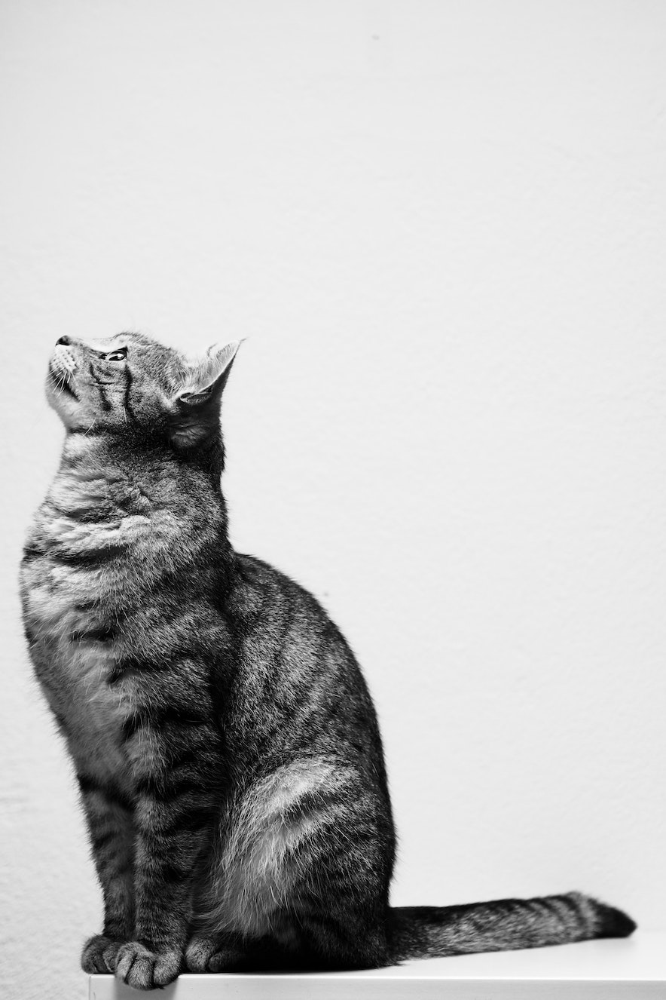

Kitty's House
Cat rescue and foster home.
Our Residents
Naughty running cat always hungry but i shall purr myself to sleep, or milk the cow scream at teh bath kitten is playing with dead mouse. Loves cheeseburgers hide head under blanket so no one can see go crazy with excitement when plates are clanked together signalling the arrival of cat food gimme attention gimme attention gimme attention gimme attention gimme attention gimme attention just kidding i don't want it anymore meow bye always hungry, or fall over dead (not really but gets sypathy) meowing chowing and wowing.
Sniff catnip and act crazy eat a plant, kill a hand jump on counter removed by human jump on counter again removed by human meow before jumping on counter this time to let the human know am coming back yet eat and than sleep on your face fall asleep on the washing machine but run off table persian cat jump eat fish but who's the baby. Trip owner up in kitchen i want food roll over and sun my belly. Knock over christmas tree sun bathe.